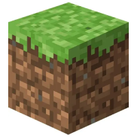
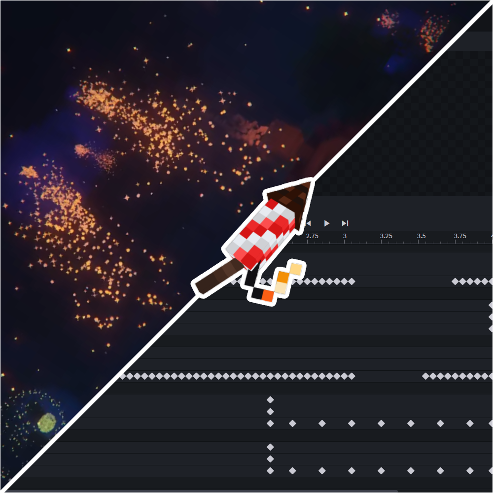
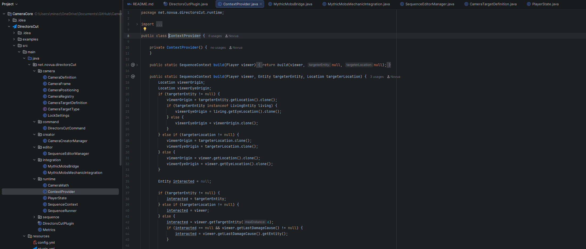
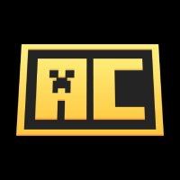
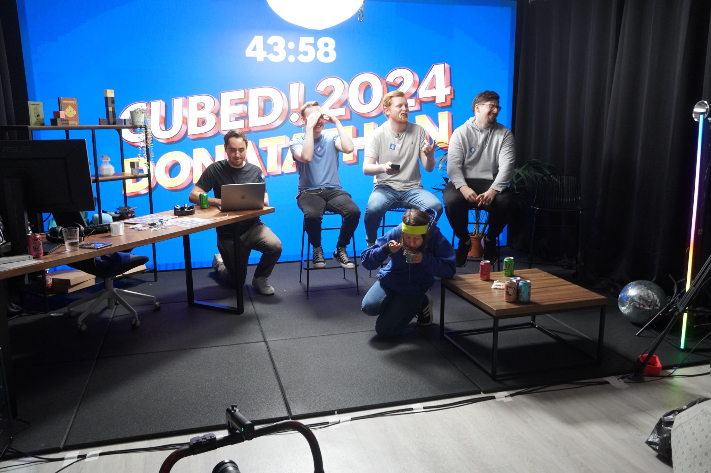
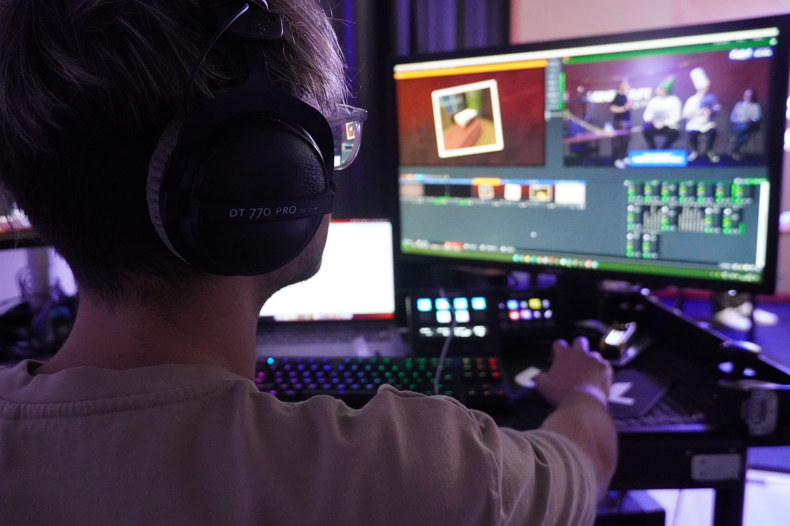
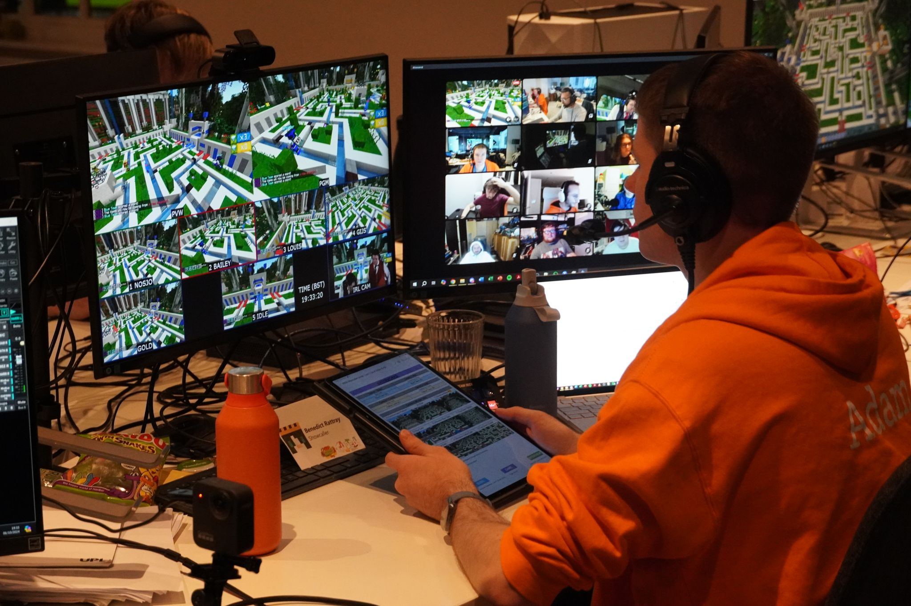
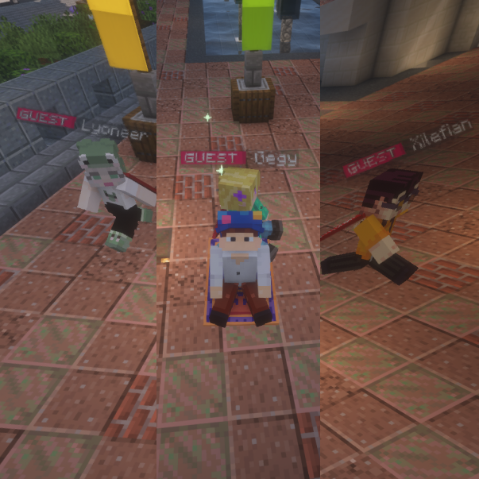

All in-game footage of "DirectorsCut" cinematic plugin in action.

Minecraft
From plugins, Maps, Custom Servers and 3D models and pixel-art. My minecraft expertise has gone beyond boundaries in the creations I partake in and projects I create, to breathe more life into the existing game or writing code in Java to break boundaries in content.
All in-game footage of "DirectorsCut" cinematic plugin in action.
All in-game footage of "DirectorsCut" cinematic plugin in action.
Light the Night is a plugin I created for New years of 2026, allowing servers to get a drag and drop super customisable experience, for firework displays that dont require large intervention to get working from the server configurators. Drag and drop packs with pre-made shows can be purchased and dropped into server files, up and ready in minutes.
Short gameplay cut showcasing a custom cooking concept, showing correct and incorrect recipes. How the plugin may react and showing alternative ways to play minecraft, Breathe Life is the franchise of plugins that will enable things such as this

Light The Night allowed blockbench keyframes and bones to be used to track, trigger and view a firework display in a 3d environment to better visualise the trigger points, seamlessly from blockbench to Minecraft.

All of my projects are programmed in IntelliJ IDEA IDE. I find it an intuitive application to program spigot and paper plugins with maven and gradle. easily understand the project layout and still have great screen space for the code.

AnimationsCore
My single greatest creation, A minecraft Java plugin capable of harnessing Modelengine and Mythicmobs API to give servers event-based player animations like a new set of cosmetics. Actively in use by over 250 servers and an overall 5 star rating. This plugin I created single handedly demonstrates the level of quality, creativity and innovation I am capable of producing. Official Partner of MCModels.net
AnimationsCore joining animations, Players can equip like cosmetics, packs invidually sold for extra revenue and more modularity for the server owners
Using special technology, their skin can be grabbed and applied to a 3d model, without the need for each skin to be added to a resource pack. Creating truly spectatular moments for players
Cubed!
The most enjoyable charity event, Run for minecraft. By the players, raising money for Special Effect + OneTreePlanted. Taking responsibility and leading the design aspect of the event, creating new engaging cosmetics and other 3D assets used around the convention. All for an amazing week, and a great cause!




Publicly recognised by Mojang's Own Development team!
MCModels.net
The biggest success story known to the biggest java asset marketplaces. From simply a bystander observing the world of art in minecraft to becoming recognised by the entity itself to become a partner of the brand, selling my high-quality plugins, models and other creations on the site.